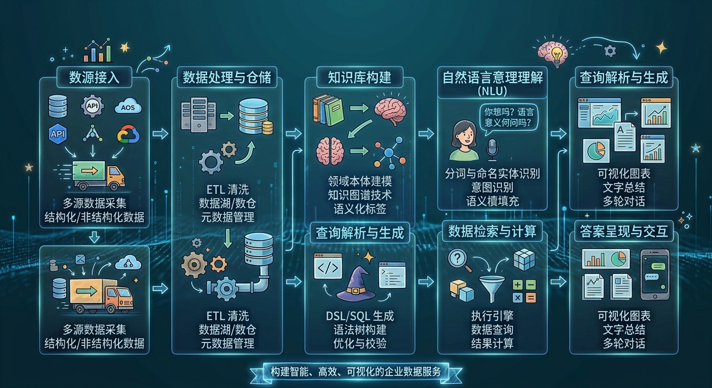
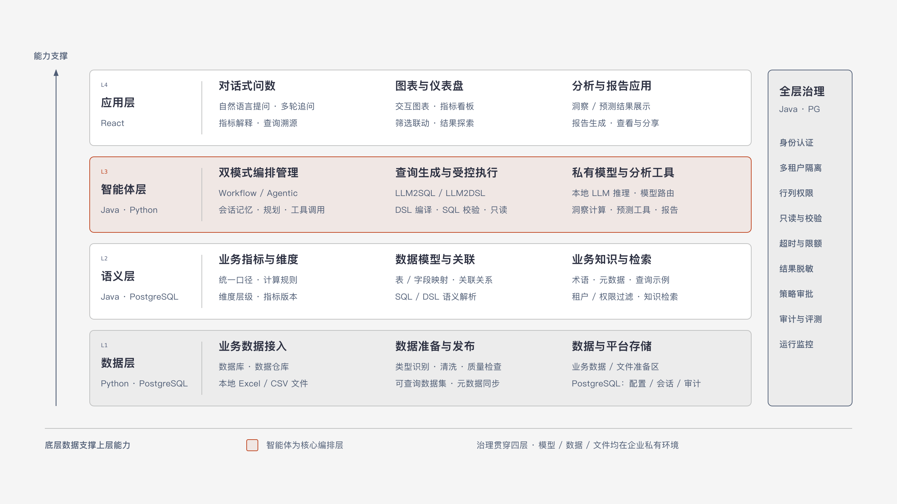
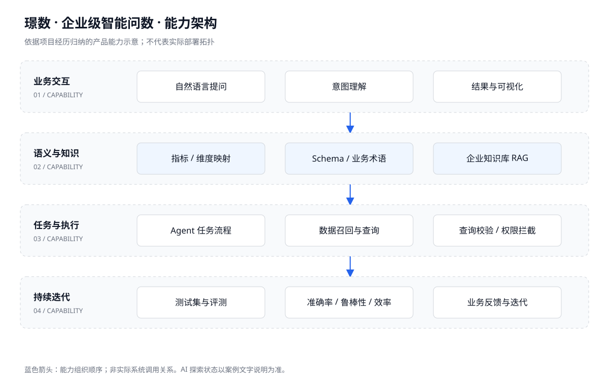

先解决业务语义
建立指标、维度、术语与数据模型的映射关系，为模型提供业务上下文。
 WANG.
WANG.01 / 项目名称与简介
让数据分析，从一句业务问题开始。
围绕传统 BI 门槛高、业务取数依赖分析师的问题，主导自然语言问数产品从规划到落地，打通业务问题、数据语义和结果呈现。
02 / 痛点介绍
03 / 价值与职责
通过自然语言交互提升业务自助取数能力，以语义体系和评测机制支撑结果准确性，将权限控制纳入数据访问过程。
担任项目负责人，负责产品规划、方案设计及落地推进。具体职责涵盖下文关键动作，并协同相关业务和技术团队实施。
04 / 产品流程图

05 / 信息架构图

06 / 关键动作
建立指标、维度、术语与数据模型的映射关系，为模型提供业务上下文。
围绕不同复杂度的分析任务梳理 Agent 执行流程与数据调用逻辑。
建立测试集和自动化评测，从准确率、鲁棒性、响应效率持续验证效果。
设计查询校验与权限拦截，控制模型访问企业数据的边界。
07 / 视频（图片）简介

点击图片查看完整能力图，辅助理解项目覆盖的能力范围。
尚未提供实际产品截图或演示视频。本图为项目资料归纳，不是系统截图；后续可替换为脱敏截图或演示视频。